Introduction
Welcome to my guide for Rebner, the Pakled captain from Lower Decks. The Pakleds might have seemed like an odd, weird choice for a captain for this game. To be sure, there’s not a ton of episodes of the live action series that feature them. Introduced in the Next Generation episode Samaritan Snare, Pakleds take advantage of their features and affect to make a first impression that comes across as… really dumb. That tricks their alien foes into letting down their guard, allowing Pakleds to steal their technology. They appear as background characters throughout Deep Space Nine, and then become the primary antagonist for a little more than a season of Lower Decks, preying on the weakest Federation ships. Their cultural hierarchy includes following the smartest and strongest Pakleds, which they denote using progressively bigger helmets. And no matter how silly the Pakleds are, the designers of Captain's Chair have created a deck that is mechanically interesting and fun to operate. Let’s dive in!
↑ back to topMissions
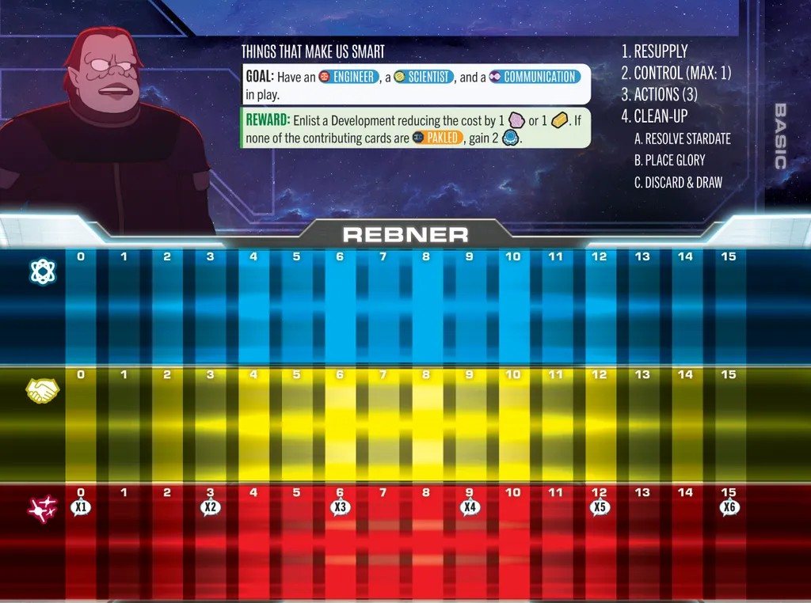
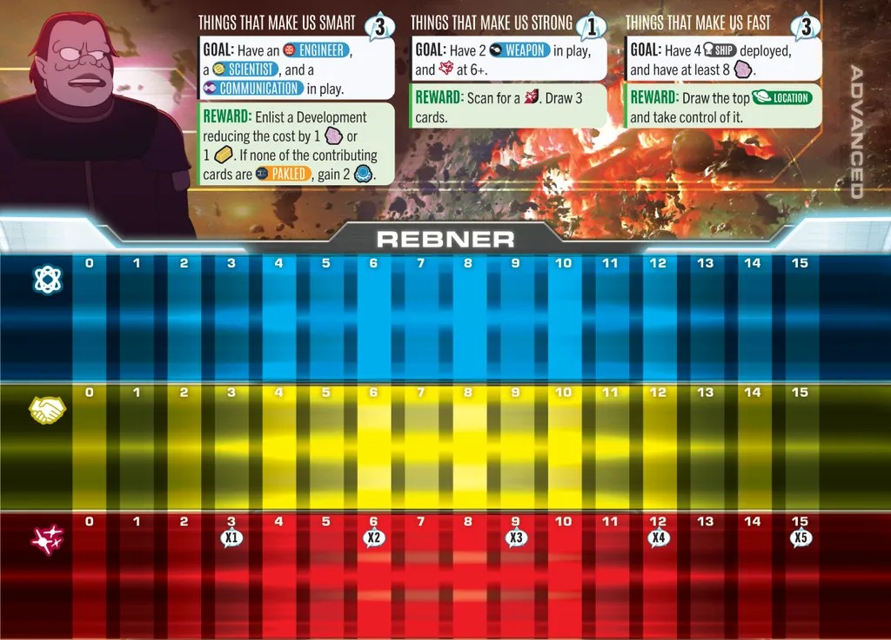
Rebner has no focus multiplier for Research or Influence, and his basic side maxes out at 6x for Military. As always the advanced side’s thresholds are one less, which is still zero for Research and Influence (he doesn’t lose points for those tracks), and 5x for Military. His basic mission is Things That Make Us Smart, which requires an Engineer, a Scientist, and a Communication in play. He only has one Engineer trait in his deck (Reginod in his Reserves), so you’ll have to look for the other two traits. As a reward, you’ll be able to enlist a Development, reducing the cost by a Dilithium or Latinum. If you manage to complete this mission without using any Pakled cards, you’ll gain two Glory. In my opinion, that’s not necessarily worth holding out for if you can accomplish this mission, but there’s a few Engineer traits in the game (4 market, 2 Location in To Boldly Go), so it doesn’t hurt to take a shot.
Rebner’s Advanced side gives you three points for Things That Make Us Smart. His second mission is Things That Make Us Strong. You need to have two Weapon traits in play and your Military track at six or higher. Your reward gives you a point and allows you to scan for a Military Focus and draw three cards. You have one Weapon in your Developments (Varuvian Bomb) and otherwise you’ll need to find another Weapon in the market. The third mission is called Things That Make Us Fast, and requires at least four Ships deployed and eight Dilithium in your supply (can’t count Glory here towards that total). You do have four Ships in your deck, so this could be a last-minute mission. The reward is three points, and you draw and take control of the top Location.
↑ back to topCaptain Card & Starting Components
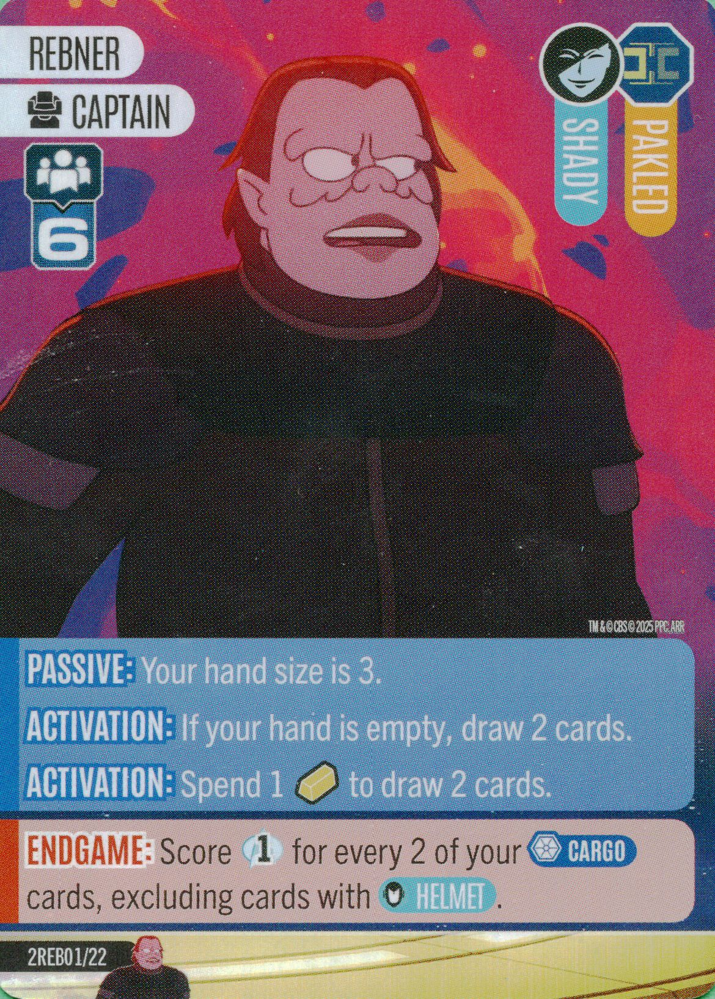
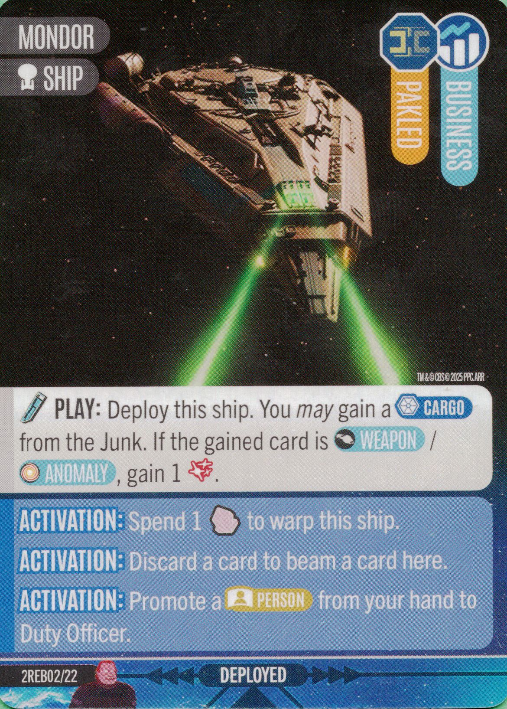
Pakleds are nothing if not cannon fodder, so Rebner has six Away Teams for lobbing into the Neutral Zone. Rebner has the Pakled and Shady traits. His Passive hand size is three cards, which means you’re going to, at first blush, have far less to work with each turn. This is alleviated by Rebner’s Activations. You can draw two cards by either spending a Latinum, or you can draw for free if your hand is empty. This choice essentially boils down to this: do you want to play and discard cards as quick as you can in your turn for the hopes of something good when you redraw from your deck using Rebner’s Activations, or do you want to just pay the Latinum at the start of your turn so you can get back up to a full hand size? I usually find myself playing whatever I have in my hand first, then using Rebner’s Activation, but I will note that this occasionally backfires, and can result in wasted action tokens (unless Karzill VI is out - see Developments). Rebner scores a point at the end of the game for every two Cargo cards you have, excluding cards with the Helmet trait. Your non-aggressive Pakled ships will be gaining Cargo anyway, meaning you should be able to at least get a few points out of this.
Rebner starts with the Mondor deployed. The ship appeared in Samaritan Snare (TNG 2x17) as the first and only Pakled vessel to be encountered on-screen by the Enterprise-D. It has the Business and Pakled traits, along with the standard Activations for a starting ship (Warp/Beam/Promote). It also has the same Play Action as the market card Pakled Freighter, allowing you to deploy the ship and gain a Cargo from the Junk, along with one Military if the gained card has the Weapon or Anomaly traits. As starting ships go, this one is remarkably solid and worth using to control locations so you can repeatedly gain Cargo. It also gives you an incentive to Junk as many Cargo cards as possible, especially against a foe that doesn’t have ways of gaining from the Junk.
Speaking of Cargo, let’s take a second to talk about the Helmets. Rebner has four Helmet cards in his deck, and they get progressively bigger. That, plus the two Helmets in the Cargo deck, allow you to activate several of your Directives and gain greater benefits from your Duty Officers. Helmets also tend to have pretty generous free play actions that help fuel your economy, either through card draw or gaining resources. Balancing where and when to play these Helmets is the key to playing a good Rebner game.
↑ back to topRebner’s Available/Discarded Cards
Rebner has seven Available cards: one Person card, one Location, two Cargo, and three Directives. There are also two cards that start in the discard: an Incident and a Directive. Most of these cards are unique to Rebner, so we’re going to review them all in detail.
↑ back to topGrebnedlog (Person)
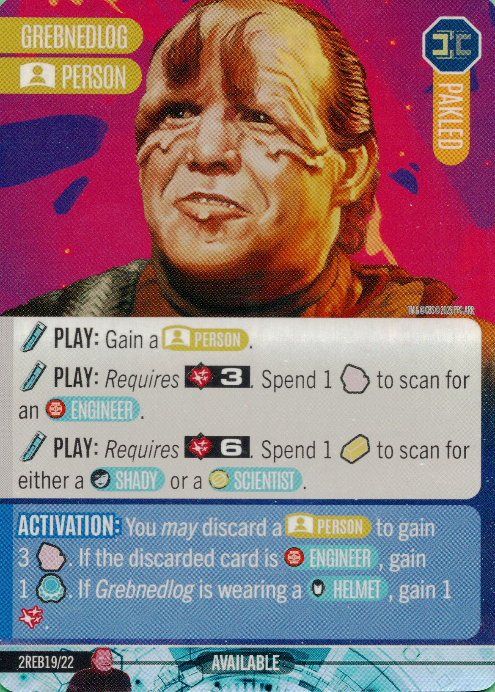
Grebnedlog is the Pakled captain of the Mondor and appears in Samaritan Snare. It’s hard to tell how much he plays dumb in order to trap Geordi La Forge on the Mondor. He uses him both as a hostage, in order to demand the computer information from Enterprise, but also in order gain some weapons that Geordi can manufacture.
Grebnedlog has the Pakled traits and three different Play Actions. The first allows you to gain a Person (simple enough). The second has a 3-Military requirement and allows you to spend a Dilithium to scan for an Engineer. This is great for your first mission and several Engineer cards synergize well with your kit. The third Play Action has a 6-Military requirement and lets you spend a Latinum to scan for either a Shady or Scientist. There’s lots of potential options here, especially since Scientist is also helpful for your first mission. Grebnedlog’s Activation lets you discard a Person card to gain three Dilithium (you’ll need it) and gain a Glory if that Person is an Engineer. Then, if he’s wearing a Helmet, you gain one Military. This is most useful for the Dilithium gain, but you’re a little short on Person cards early in the game so it’s not always the best to make him Duty Officer right away. Note that you don’t need to discard a Person to gain the Military as long as you have a Helmet on Grebnedlog.
↑ back to topPakled Planet (Location)
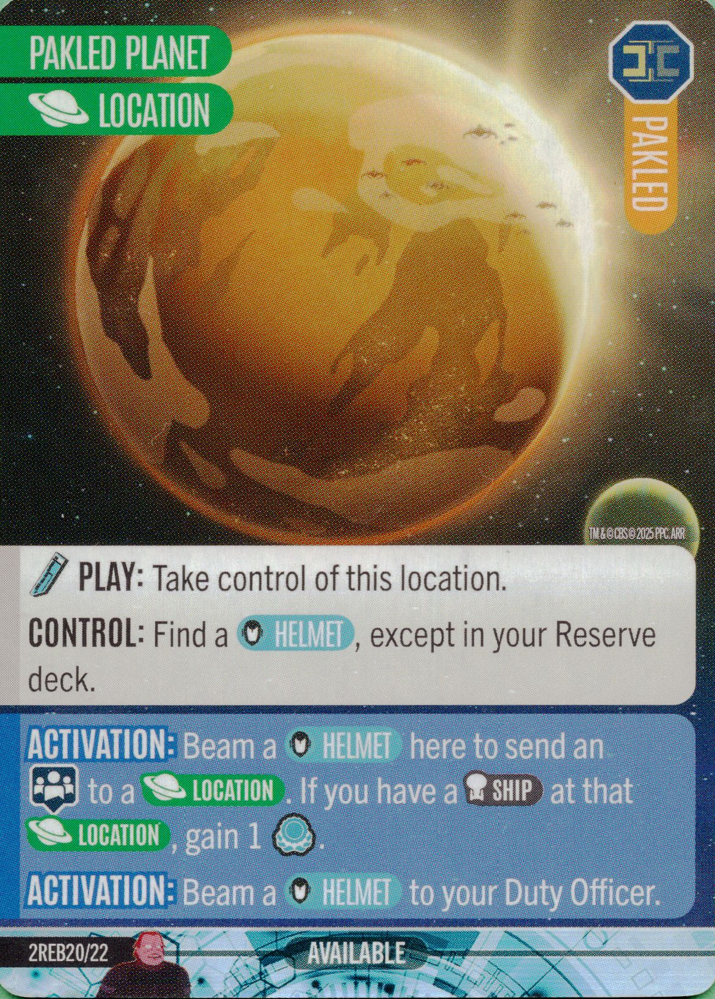
Pakled Planet is accurately and plainly named. It has the Pakled trait and when you control it you can find a Helmet (except in your Reserve). The first Activation requires you to beam a Helmet to Pakled Planet to send an Away Team to a location, gaining a Glory if there’s a Ship at that location. The second Activation lets you beam a Helmet to your Duty Officer, and this is the primary way you’ll be getting Helmets on your Duty Officer. I usually wait to use the first Activation until I’m sure I won’t need to beam a Helmet to a Duty Officer, but Rebner has limited ways to get Away Teams out so I certainly use Pakled Planet to send Away Teams.
↑ back to topBig Helmet (Cargo)
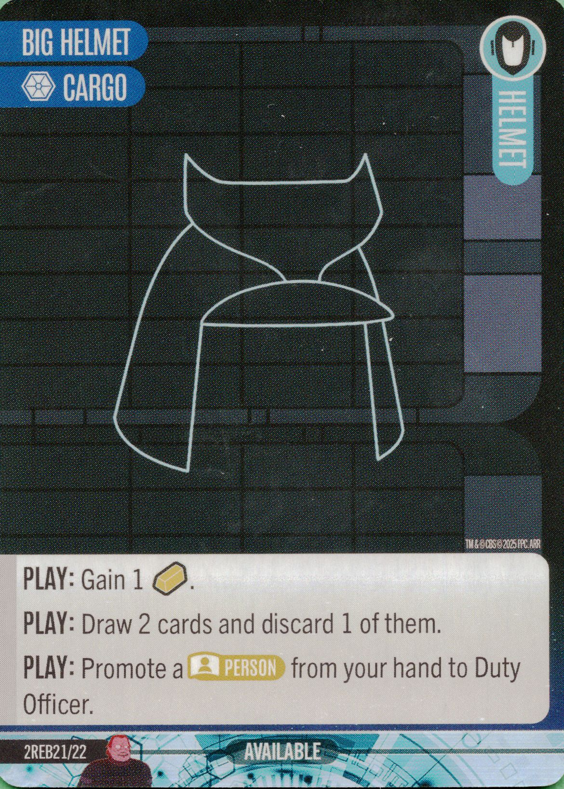
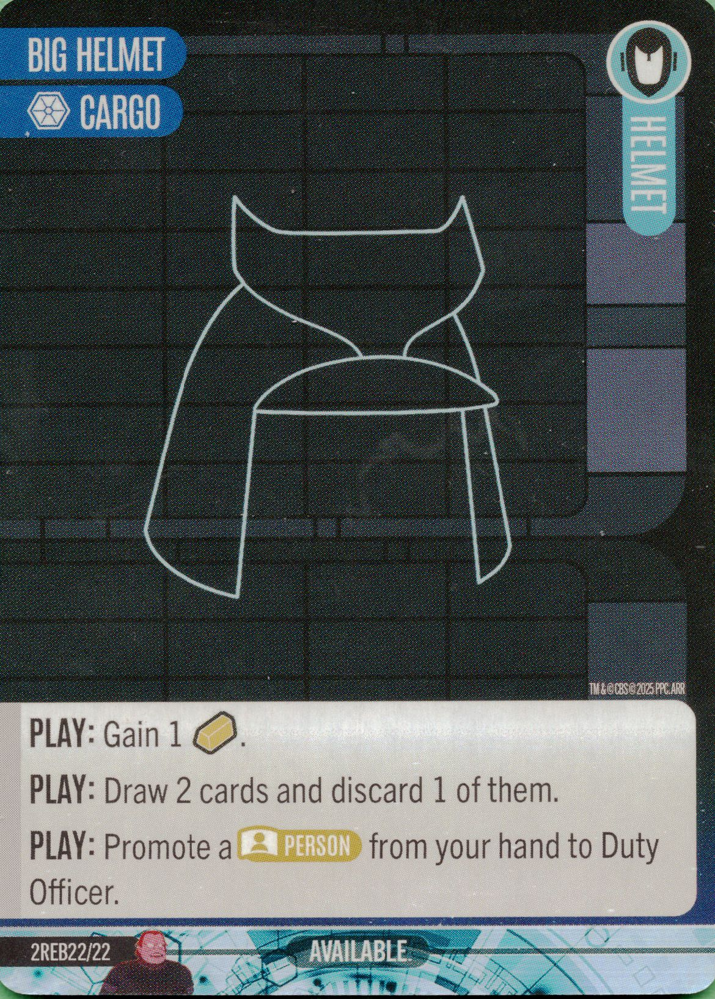
There are two Big Helmet cards in your deck. They both have the Helmet trait, and all three actions are free play actions. I’m declining writing out all of the text because they’re so freaking simple to understand. The real question with the helmets is how you’re going to use them. I think the constant temptation is to use Helmets to draw two cards and discard one, at least that’s what I find myself leaning towards. It helps with deck churn, and giving you more options. You will need that Latinum at some point, but you have a ship that promotes Duty Officers so that’s not as crucial. Last point with the Helmets is that you will also be using them in coordination with Ongoing Directives and Locations, so don’t just jump to “Draw and Discard” every time.
↑ back to topSalvage (Directive)
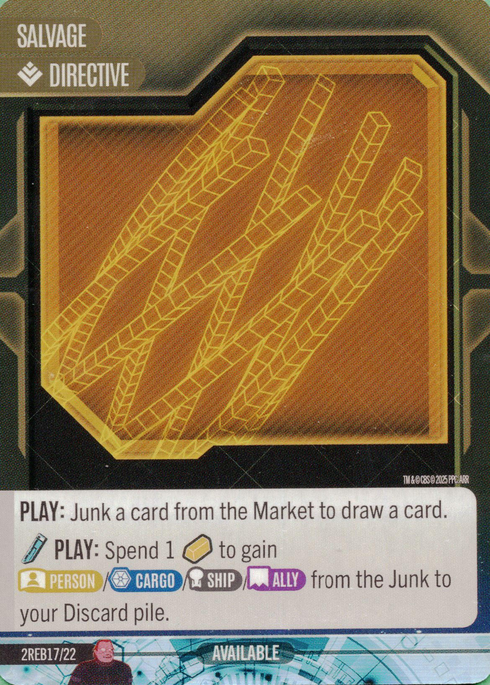
This is the first time I’m talking about the Salvage Directive, though it does appear in Khan’s deck so we’ll talk about it next time again. There’s a free play Action that lets you Junk a card in the market to draw a card, which helps when you’re low on Action tokens or need that one more card you know you have in your deck. There’s also a Play Action where you can gain a standard suit card from the Junk to your discard pile at the cost of a Latinum. This is great if there’s a lot of cards you want in the discard, but pretty wimpy the earlier you are in the game. The nice thing is that once you combine boxes, there are one or two cards in the Junk from the start.
↑ back to topPakled Decree (Directive)
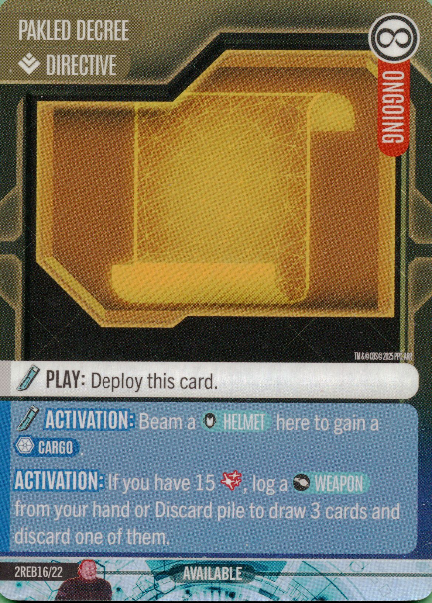
An ongoing card, once you have it in your Fleet Area you can use it to gain Cargo (at the cost of an action token and beaming a Helmet to this card). It’s one of Rebner’s main ways to get more Cargo, certainly if you’re not using Salvage and looking in the Junk. There’s also a free Activation that lets you log a Weapon from your hand or Discard pile to draw three cards and discard one, though it requires you to max out your Military track. I’ve only had the occasion to do this a few times but it’s great helping you move through your deck to get all the Developments before the game ends.
↑ back to topSamaritan Snare (Directive)
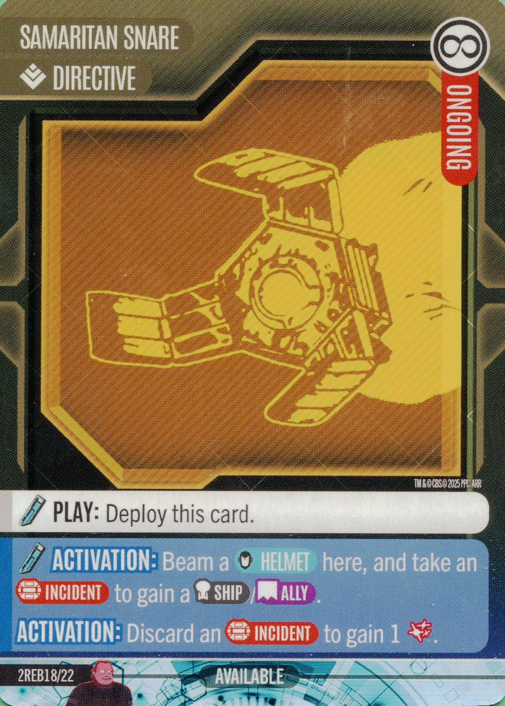
Another reference to the TNG episode of the same name, Samaritan Snare allows you to beam a Helmet to grab a Ship or Ally card (at the cost of a Helmet and action token, of course). The other Activation lets you discard an Incident to gain a Military, which is often helpful when you have no other purpose for the Incidents in your hand.
↑ back to topRebelution (Directive)
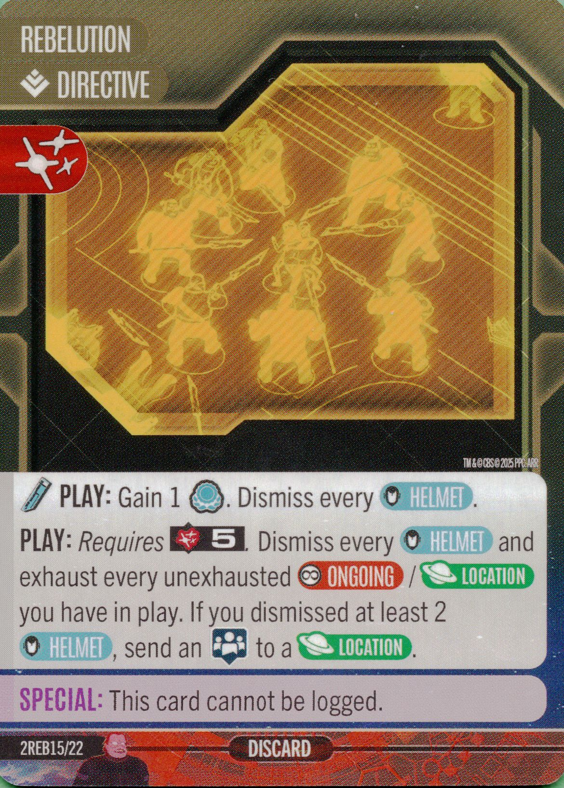
When it’s a Rebelution, all of the Pakleds change Helmets and a new Pakled is in charge. Let’s start with the Special Text which prevents this card from being logged, which is super important as this is the only consistent way to return Helmets to your deck. The first Play Action gains you a Glory and you dismiss every Helmet. Alternatively, if you have 5 Military, you dismiss every Helmet card and exhaust every unexhausted Ongoing card or Location that you have in play, sending an Away Team to a location if you dismissed at least two Helmets. Keep in mind that cards in your Staging Area cannot be dismissed, so no using this to get Helmets back you’ve played for their Play Action this turn. While it’s inherently preferable to not have to spend an Action token, you do lose out on using any of your tableau after you play this card as a free action, so I’d suggest waiting until it’s your last card. This Directive also has a Military Skill, which is the only kind of skill you care about.
↑ back to topRed Alarm (Incident)
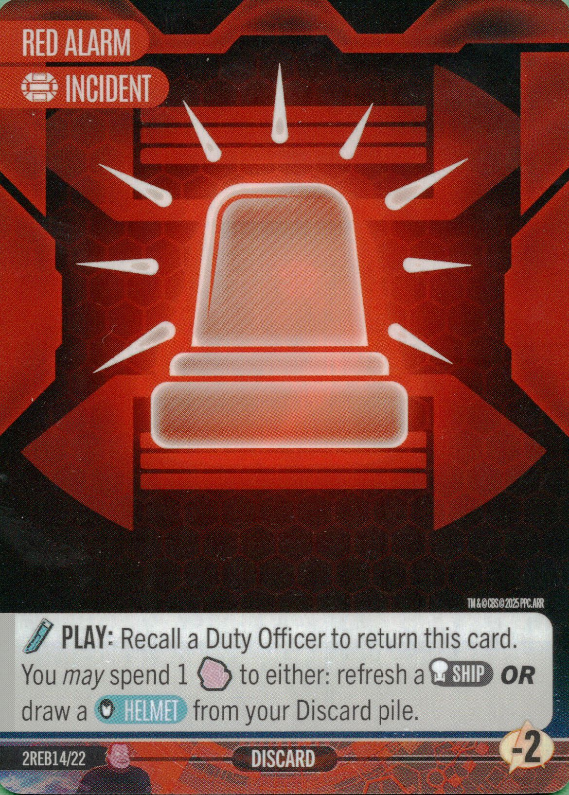
You need to be able to recall a Duty Officer to return Red Alarm. Then you can spend a Dilithium to draw a Helmet from your discard pile or refresh a Ship. I usually refresh a Ship and often just promote the same Duty Officer again! But if there’s a Helmet in the discard, it’s often worth getting.
↑ back to topRebner’s Starting Hand Strategies
After doing Archer’s guide last time, it’s nice to have a deck that starts with less cards in hand. You’d think there would be less to talk about, which is true… in some ways. Rebner has so much flexibility in how to get more cards that it kind of makes talking about his deck a little tough because he really does have a lot of potential options. For a quick example, if he started with both Big Helmet cards and Salvage, he could draw 5 cards total (discarding 2 of them) meaning he’s now into his first Reserve and you haven’t even used Rebner’s Activation yet. If that Reserve is Rumdar (more on him later) you could get another 4 cards which would mean drawing the remaining four cards in your deck. Even though you can’t use them to gain anything, you could get your two Ongoing Directives out (Pakled Decree and Samaritan Snare) play Grebnedlog, and discard Red Alarm for a Military, and you can hold on to Pakled Planet to find a Helmet at the start of your next turn. It’s a pretty good first turn as far as churning your deck goes, and doesn’t result in any wasted action tokens. The only downside is you’re not going to get to use Rebner’s Activation for free, you’ll have to pay your Latinum.
Now that we’ve established that it really can be that open, let’s go the other direction. You always get to draw two more cards with Rebner but that could mean only five of your seven cards, and let’s say you get stuck with no Helmets. The good news is that you’ll have Pakled Planet, which means you’ll be able to find one of those Helmets, and have the option to get the other one using that first Helmet. Easy Peasy.
So we’ve established that, if you want to, you can have access to everything. Now we just have the question of whether or not you’ll be greedy and try to hold on to that Latinum. Because if you can empty out your hand, Rebner’s Activation becomes free. But is it that easy to empty your three card hand? It can be, if you beam a card and play/discard the other. But then you might be stuck with two Action tokens and nothing to do with them. It’s not terribly likely, but it’s happened to me before as I play the puzzle of “discard, draw, play, draw, discard, etc”.
There’s also the Ongoing Directives you should consider getting out as soon as you can. Pakled Decree and Samaritan Snare might not be relevant on your first turn, but getting them out is really helpful to thin your deck. If you’ve played Imperium, it’s comparable to the Mayans and Olmecs (actually, the whole deck is, because the Masks are now Helmets). By getting them out, they’re your main method of gaining those non-Person cards from the market. Unfortunately, the cost is rather high when you consider that they require Helmets in addition to action tokens.
Early resource management shouldn’t be terribly hard. Grebnedlog offers an opportunity to gain Dilithium directly via his Activation, and you’ll have more opportunities in the Reserves. Similarly, if you’re not used to hoarding Latinum in a game you might want to consider it here as it’s frequently necessary. The only other thing I would keep in mind early is keeping an eye out for Weapon and Shady cards, both of which are useful late-game or for missions.
↑ back to topRebner’s Reserve Cards
Rebner has five Reserve Cards consisting of three Persons, one Ship, and one Cargo. They’re unique to Rebner, so let’s dive in:
↑ back to topAmbassador Grubdin (Person)
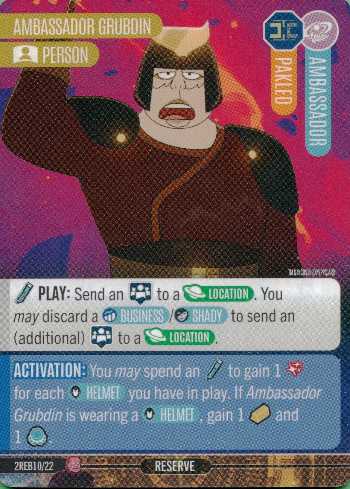
Ambassador Grubdin has the Pakled and Ambassador traits. His Play Action allows you to send an Away Team to a Location, and you may discard a Business or Shady card to send an additional Away Team. This is great, but I feel like I never have the card in my hand to discard (and Rebner’s hand is so small to begin with). As Duty Officer, he can spend an action token to gain a Military for each Helmet you have in play, and he gains a Latinum and Glory if he’s wearing a Helmet. You don’t need to do the first part in order to do the second part of the text. I don’t mind this card, and I certainly like sending Away Teams, but I’ve never found Grubdin terribly useful in my games unless I really need to move up the Military track. And there’s other methods I prefer.
↑ back to topReginod (Person)
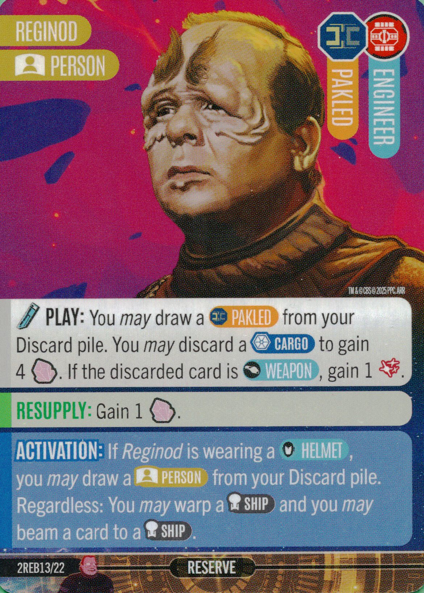
”He is Reginod”. The “Chief Engineer” (?) of the Mondor, he is somehow smart enough to hide the true state of the Mondor from the Enterprise in order to kidnap and threaten them for their computer data. I presume that he’s smart enough to keep the ship running, but with Pakleds, you never know.
Reginod has the Engineer and Pakled traits, and his Play Action lets you draw a Pakled from your discard pile and you may discard a Cargo to gain four Dilithium (which you’ll need). You also gain a Military if you discarded a Cargo with the Weapon trait. His resupply gains you one Dilithium, and his Activation lets you warp a Ship and beam a card to a Ship, and if he’s wearing a Helmet you can draw a Person from your discard pile. I think that your need for Dilithium is so high that Reginod is really helpful simply to boost your Dilithium production. That being said, simply discarding him with Grebnedlog can get you a similar amount. He’s also a potential way to get your first mission done, though you’ll forfeit some Glory.
↑ back to topRumdar (Person)
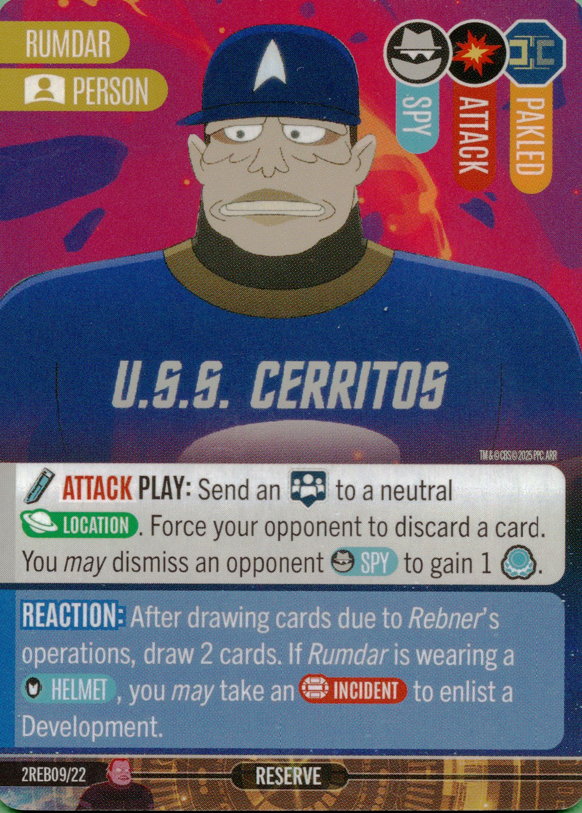
Rumdar good spy. He goes on board the Cerritos while Freeman and Shaxs are down trying to negotiate on Pakled planet. He’s able to survive the vacuum of space (somehow) after mistaking an airlock for a bathroom. Sigh. We’re not dealing with the best and brightest, are we?
Rumdar has the Spy, Attack, and Pakled traits and allows you to send an Away Team to a neutral location. His Attack forces your opponent to discard a card, and if they have a Spy in play you can dismiss them to gain a Glory (if multiple you choose). His Reaction is awesome, as it allows you to draw two additional cards after you draw cards due to Rebner’s operations (doubling the draw from two to four). If he’s wearing a Helmet, you can also take an Incident to enlist a Development. There’s a lot of great options here, but for the most part I prefer to camp him in the Duty Officer position so I can increase my card draw significantly (thanks Spy trait).
↑ back to topThe Clumpship Pakled (Ship)
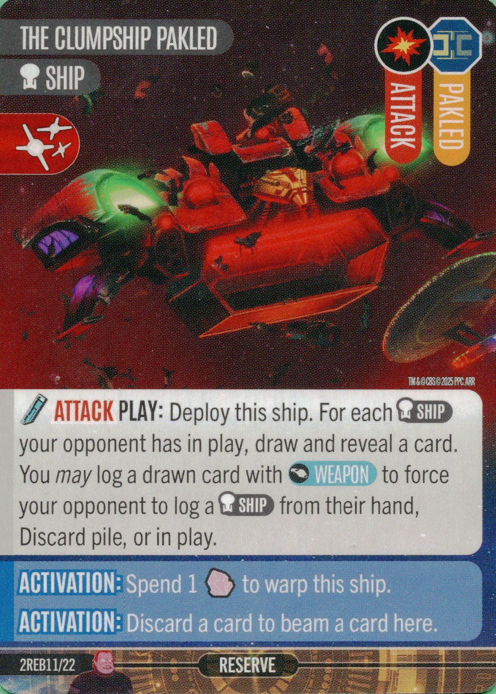
An amalgamation of many ships, The Clumpship Pakled is just powerful enough to beat up the California-class of Federation vessels. Still, it’s no match for the U.S.S. Titan.
The Clumpship Pakled has a Military Skill and the Pakled and Attack traits. When you deploy it, you’ll draw a card for each Ship your opponent has in play (deployed or beamed). And then you may log one of them with the Weapon trait to force your opponent to log a Ship from their hand, discard pile, or in play. Devastating effect when performed correctly, and it has a higher chance of success when your opponent has more Ships. You can also warp and beam using the standard operations.
↑ back to topEven Bigger Helmet (Cargo)
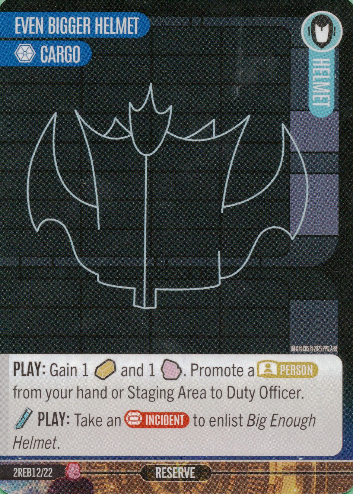
Who is in charge here? It’s the guy with the even bigger Helmet? Okay then. With the free play Action, you can gain a Latinum and Dilithium, and you must Promote a Person from your hand or Staging Area to Duty Officer (if you can). You can also spend an action token and take an Incident to enlist Big Enough Helmet… oh, there’s another one? Sigh.
↑ back to topRebner’s Reserve Deck Strategy
Thankfully, despite a reasonable amount of starting strategy considerations, there’s not too much to consider in the Reserve section. I think the best cards you can pull early are Rumdar or Even Bigger Helmet. They offer you the best chances of speeding up what is already a very quick game with Rebner, which is one of your better strategies. I would caution you however that if you push quickly through your Developments you’ll need ways to pay for them. Grebnedlog and Reginod can both help you with Dilithium, and your Helmets are probably your best bets for Latinum. That said, if you can gain some resource generating market cards, that will absolutely benefit you as a mid-game strategy. Beyond that, just be careful not to rely so much on your deck churn puzzle that you forget to gain cards from the market and Junk. It’s really easy to try to figure out how to extend those turns just a little bit more but don’t forget the basics of deck management: beam, log, and deploy. And Rebner doesn’t have a lot of great logging mechanisms so if you can find them, use them.
↑ back to topRebner’s Development Cards
Rebner has six Development cards, including one Person, two Cargo, two Ships, and one Location.
↑ back to topThe Pakled Emperor (Person) (Dev Cost: 2 Latinum)
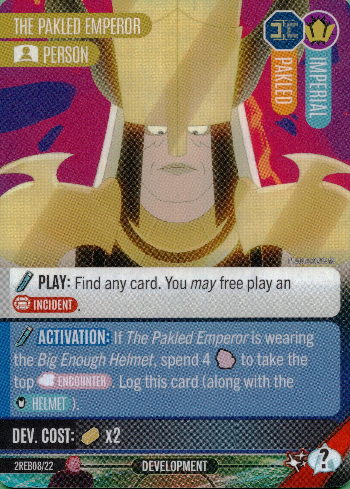
Ah, yes, the Pakled Queen is here to negotiate. Oh, that’s not a Big Enough Helmet? Okay, what about the Pakled King? Him neither? Who else is there? The Pakled Emperor! Finally, we come across someone in charge and… dang, a Rebelution just killed him. Oops.
The Pakled Emperor is the only one with a Big Enough Helmet. He has the Imperial and Pakled traits. You can use the Play Action to find any card and free play an Incident. As Duty Officer, as long as he’s wearing a Big Enough Helmet, you can spend four Dilithium to take the top Encounter and log both The Pakled Emperor and the Big Enough Helmet. As this is the only way to get an Encounter from Rebner’s deck, it’s pretty important to be working towards this if you can. However, don’t discount the ability to find any card and return Incidents, as that can sometimes be almost as effective. Imagine getting an encounter with focus scoring for a track you don’t care about. So annoying. At least The Pakled Emperor scores for Military focus scoring.
↑ back to topBig Enough Helmet (Cargo) (Dev Cost: Your Opponent may draw 2 cards)
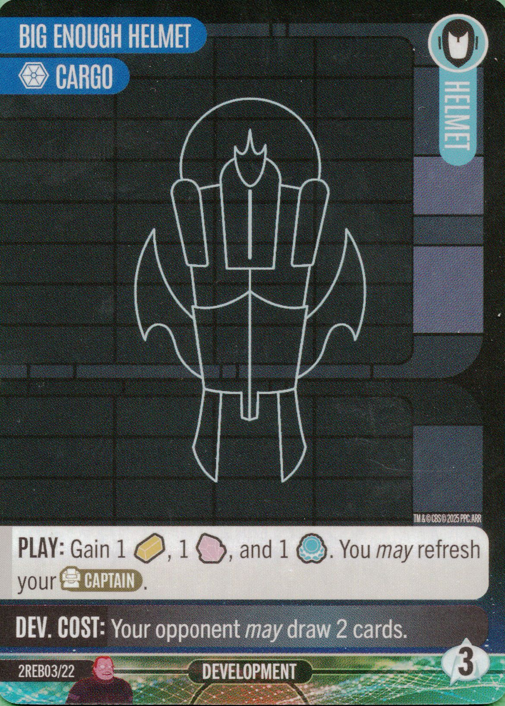
As discussed, this Big Enough Helmet is necessary for getting an Encounter, but on its own it’s a great resources generator and it allows you to refresh Rebner. Super powerful as a Helmet card and can help you push through mid-game with resources and repeated card draw. It scores 3 points.
↑ back to topVaruvian Bomb (Cargo) (Dev Cost: 5 Dilithium OR free if you have 1+ Away Teams on Karzill VI)
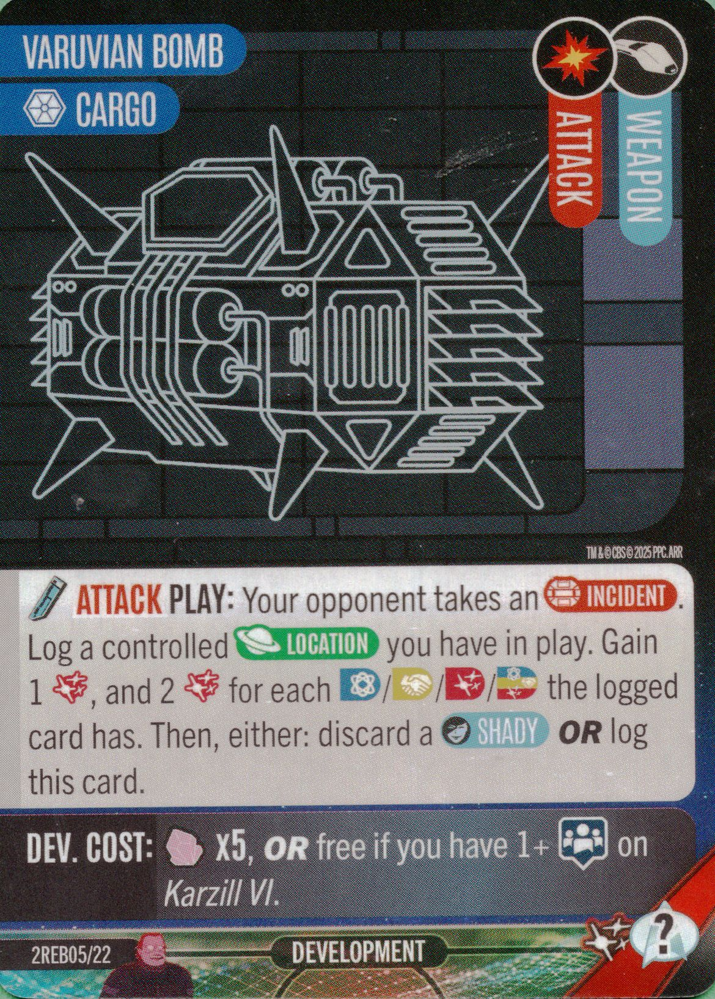
The Pakleds spent the entirety of Lower Decks season 2 trying to get their hands on a Varuvian Bomb, only to blow up a bomb on their own planet. Turns out they just wanted to frame the Federation in hopes of getting a more resource-rich planet, but it would take a covert ops team including Tuvok and Morgan Bateson to figure that out.
With the Attack and Weapon traits, the Varuvian Bomb forces your opponent to take an Incident. You log a controlled Location, gaining one Military, and another Military for every skill icon the logged Location has. Then, you either discard a card with the Shady trait or log Varuvian Bomb. To be honest, I’ve usually logged it, because I usually max out the Military track by the time this card is in play. However, it’s useful for your second mission so don’t use it until you’ve made sure to benefit from that Weapon trait.
↑ back to topJackabog’s Clumpship (Ship) (Dev Cost: 3 Dilithium, 1 Latinum)
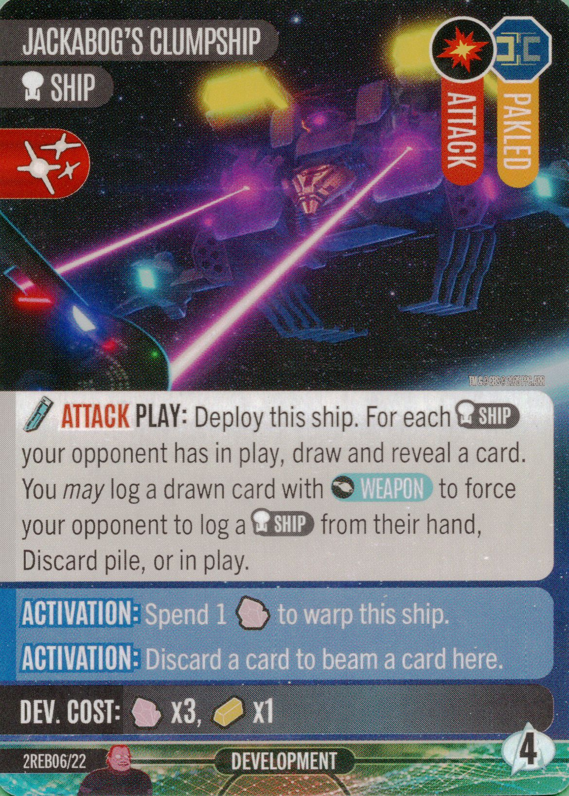
Destroyer of the U.S.S. Solvang, Jackabog’s Clumpship almost took out the U.S.S. Cerritos… but thankfully, the U.S.S. Titan swooped in to save the day.
Jackabog’s Clumpship is nearly identical to The Clumpship Pakled, other than the Dev Cost and printed points. To be honest, I usually only develop this one if I really need it for my Mission, or in order to further control the Neutral Zone. It scores four points, which is another reason I usually end up developing it by the end of the game.
↑ back to topHarpy (Ship) (Dev Cost: 2 Latinum)
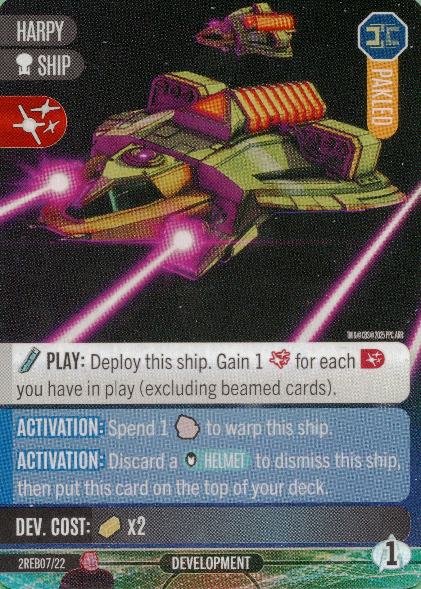
Harpy is a class of ship that the Pakleds used when fighting the U.S.S. Titan, right before it snuck away into a Gluonic Distortion (see Riker’s Deck guide).
Harpy has a Military skill and the Pakled trait, and most importantly, it’s your version of Utilize. When it enters play, you gain a Military for each Military skill you have in play. You can’t beam anything there, but you can warp it for controlling the Neutral Zone, or you can discard a Helmet to dismiss it and place it on top of your deck. This is one of my first Developments for Rebner simply so I can max out the Military track as soon as possible. It scores one point.
↑ back to topKarzill VI (Location) (Dev Cost: 2 Latinum and 5+ Military)
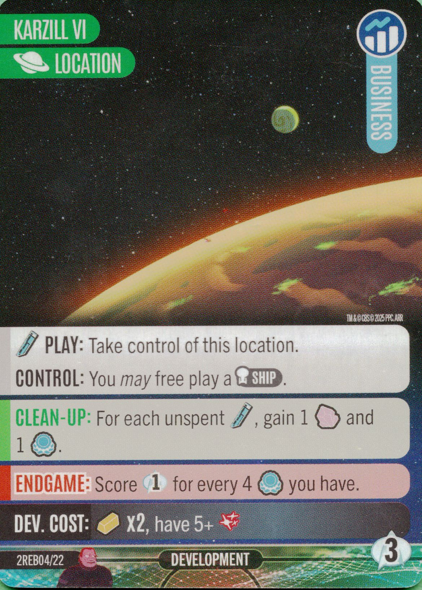
The location of a mining colony that processed refined Varuvian ore, the Pakleds took over the planet to mine resources for their Varuvian Bomb. It was here that a freak transporter accident created two Bradward Boimlers, the original who left for the Cerritos, and the clone who went by William Boimler and Captained the Anaximander for Section 31.
Karzill VI has the Business trait (mining after all) and allows you to free play a ship when you control it. If you don’t spend all your action tokens, you can gain a Dilithium and a Glory for each unspent token, and at Endgame it scores a point for every four Glory you have. It also scores a printed 3 points. It’s a nice boost for Rebner, who can end the game pretty quickly but needs an extra boost in scoring. Thematically, you can enlist Varuvian Bomb for free if you have an Away Team here to do the mining.
↑ back to topRebner’s Development Strategy
I’ve played a lot of Rebner lately, and I keep struggling to figure out the perfect order to get his Developments. Part of this is that he has multiple ways to get his Developments early. I think that, without question, you should use Even Bigger Helmet to get Big Enough Helmet at least once, and preferably as your first play of that card. Having another Helmet not only helps your resource economy but you can beam them for other cards you otherwise can’t get from the market.
I want to tell you that Harpy should always be the first choice, because it’s my go-to. It provides track movement, which means better focus scoring, which you need by the end of the game (and often sooner). That being said, there’s a strong argument (so long as you have at least five Military) that you should really focus on getting Karzill VI so that you can lock in the Endgame point scoring and benefit from enlisting Varuvian Bomb for free. I think that’s not a bad move.
I like the reasoning behind getting The Pakled Emperor first, mostly for the Incident management and Find ability, especially if you still have cards in your Reserve you could find. I think that if you luck into Rumdar as your first Reserve, you should get a Helmet on him immediately and get The Pakled Emperor, and use The Pakled Emperor repeatedly to protect you from all the bad Incidents you took. Beyond that, if you need Ships, no issue in getting them. Just keep in mind that once everything’s enlisted, you better hurry the game up because benefiting from cycling has ended.
↑ back to topNotable Market Cards
Welcome to a purely hypothetical discussion of Rebner and the common market. As always, I appreciate everyone sharing any really interesting combos you’ve found in the market in the comments on BGG or the Discord (in the Archer conversation). Cards found in both the core box and To Boldly Go are discussed in the section for To Boldly Go. A couple reminders for Rebner specifically: Military Focus scoring is all that matters, and it’s usually not worth trying to advance on other tracks to meet Research or Influence specialty requirements. Second, he LOVES Weapon cards, and the more you can get the better.
↑ back to topPerson Deck
To Boldly Go: Jarok is a fine Person card to play for the extra Development, but you don’t want to be limited by being unable to play Attack cards.
Gral doesn’t offer anything special for Rebner, including searching for influence skill/focus cards, but it’s always nice to be able to give Incidents to your opponents.
Ash Tyler seems like a great choice for Rebner, especially since he has no Starfleet or Klingon cards in his deck and can find Military skill/focus cards, and he usually gets a lot of Glory.
Commander Tysess is pretty good for everyone, and Rebner is no exception.
Degra is a good early choice for scanning for Xindi to find Kemocite (to later find Weapons) and Xindi-Reptilian Battleship (for the scoring and Cargo gain), but the Encounter won’t be possible most of the time.
Henry Mudd is basically useless for Rebner, except maybe as a Duty Officer in order to recall some Helmets.
Hoshi Sato is nearly completely useless for Rebner. Her only benefit would maybe be the Communication trait.
Jackabog is the perfect Pakled market card, and you can potentially scan for him with the Shady scan, use him to gain ships, and then gain another Encounter (probably the easiest Encounter for Rebner).
Landru is pretty pointless for Rebner, unless you can find some reason to get two Influence.
Lursa is a great card for Rebner, not just for the scoring but for sending Away Teams and gaining ships. Her Activation can also benefit from Business card discards, of which Rebner has a decent degree.
Malcolm Reed is also pretty good for Rebner simply because he’s a free play card and has the potential for military gain, and Dilithium gain in the Resupply.
Malik is great for Rebner due to the Weapon trait and potential for Military skills and gaining extra actions.
Petra Aberdeen isn’t really helpful for Rebner except as a potential Latinum engine as a Duty Officer.
Phlox is not great because of his Research affinity.
President Rillak loses a lot of her benefit for Rebner because he doesn’t have Utilize or Inspire, but she’s good at returning Incidents which everybody loves.
Riva isn’t a great card for Rebner unless you want to rush the endgame by logging Attack cards. He’s not worth points but can get you Glory.
Rom runs on Latinum, making him a good card for Rebner, especially as Duty Officer where he helps draw cards.
Sarina Douglas isn’t bad for Rebner, as wild traits and Incident management are both really great for him.
Soji Asha gives me pause because she doesn’t score points, but getting the Borg Probe is great for beaming and she can really help thin the deck.
Su’kal is universally helpful.
Talok’s fine except that he’s Influence scoring and thus kind of not worth getting.
Teverin Krit is surprisingly good because of the Latinum gain and the amount of Cargo you could potentially have in play.
Thelev isn’t that amazing but if you have an Ambassador card and if your opponents have some Ambassadors then it’s worth the card draw and focus scoring.
Travis Mayweather seems good until you realize that you really can’t afford to exhaust Rebner and your economy isn’t good enough to constantly spend Dilithium.
Va’al Trask is fantastic for Rebner in almost every way, including scanning for Weapon cards, logging Person cards, his Military Skills, and his Weapon trait.
Vice Admiral Pasalk is quite good for Rebner as Duty Officer because Rebner has two Ongoing cards in play constantly.
Second Contact:
D’Erika Tendi, might be the only way I’d suggest going for cards with Influence requirements, because you might be able to play her enough to meet some low ones. And, she’s otherwise fantastic for Rebner.
Jennifer Sh’reyan is nice for the Recall ability, but more than that I like that there’s some moderate Dilithium generation.
K’Ranch has a Weapon trait and Military skill along with a Play action that gains Military and Glory. Rebner loves him.
Ma’ah is fine, but his abilities focus on Klingon cards so you’ll need to evaluate if you have enough of them for that to matter.
Parmen is a great card to play but likely doesn’t work as your Duty Officer because you won’t hit that six-Influence requirement. Nor should you.
Core Box:
Admiral Necheyev isn’t ideal for Rebner, not just because she doesn’t score but because you have very few cards in hand to even bother beaming. I’d avoid her.
Admiral Pressman on the other hand is a great Rebner card, both for the Shady trait and because he can free play an Attack. He’s not going to do much as a Duty Officer, but that’s fine. You can discard him to keep Varuvian Bomb in play.
Ambassador Kamarag might be worth it for the Military and scan, if you know what you’re looking for with that Klingon scan (Lursa, Dorg, or K’t’inga Battlecruiser would be good ones for Rebner).
B-4, like most synthetics, is decent enough for Rebner, both because you can gain much needed Dilithium , but also because he focuses on Cargo gain. It is from the Junk though, so be sure to be junking cards from the Cargo deck or it’ll feel less useful.
Bruce Maddox is really only beneficial if you’ve gotten other Synthetics or Androids, which Rebner might get eventually. Even though he doesn’t score, you might consider getting him for the Engineer and Scientist traits for Rebner’s first Mission.
Captain Dorg synergizes really well with Rebner, so I’d almost argue he’s a must-get if you can.
Joret Dal is not terrible for Rebner, but I don’t like the idea of logging his Person cards when they’re his main method for Dilithium production. Still, the hand size increase is nice.
Laas has more utility for Pakleds precisely because he can become a Helmet (or at least copy their play action). His Duty Officer Activation isn’t bad but again, Dilithium is sparse.
Laris is another card that needs an Android around to be of full benefit for her play action, but her Activation can be utilized by Rebner, especially if he’s grabbed some extra Helmets.
Lenara Kahn is good for her Scientist trait, and that’s about it for Rebner.
Lwaxana Troi is a good choice for refreshing Rebner, but that’s about it.
Mirok’s fine at Duty Officer, I guess. But otherwise there aren’t many upsides (scoring is Research).
Moriarty is basically just lights and forcefields for Rebner.
Peanut Hamper is great for Rebner due to your Dilithium need and the Shady trait.
Sakonna is fine for Rebner, and will be even better once everybody starts playing with the Badlands.
Zefram Cochrane is a pretty good choice for Rebner, not just because you need some other ways to get Encounters, but also because you’ll have plenty of Ships to put in your Staging Area, and alternatively three card draw and the Engineer trait help you as well.
↑ back to topCargo Deck
To Boldly Go:
Borg Spatial Trajector is essentially useless to Rebner.
Cloaking Device on the other hand is great and will help him make use of those Away Teams. The only issue might be having enough cards to discard.
Computer Virus has a Military Skill and two of the three traits you need for your first mission, which is a no-brainer.
Rebner and EVA Suits are a pretty good combination, especially when you consider the number of Ships he has.
Forced Singularity is a weird one for Rebner. On one hand, he likes having multiple Duty Officers and can usually benefit with enough Engineer cards. On the other hand, it scores for Research. It might be okay in the early game, but you make the call.
Holosuite can be good for Rebner as a way to get cards from the market and get some extra Latinum.
Horta is probably not worth the Development.
Jago’s Epigenetic Implant might be a way to get some Latinum, but beyond that it’s not really that useful.
Kemocite is fantastic for Rebner and should be sought out, if possible.
Lirpa is good for the Weapon trait and attack, but you shouldn’t have a ton of other Vulcan cards so the card-draw element is wasted.
Medical Diagnostic Hat is probably not going to affect your Rebner game.
Orb of Time is good for everybody… but Rebner doesn’t score for it or have a great logging engine so maybe not for him?
Phasers are great for Rebner across the board, no downsides.
Plasma Manifold is excellent so long as you have enough Dilithium to power it.
Saurian Brandy is worth avoiding because you have other ways to gain Person cards.
Type III Disruptor Pistols are fine, especially if you have the traits necessary to remove opponent Away Teams (a thematic team-up with Captain Dorg should supply the opportunity).
Universal Translator is probably not the way you’re getting another Encounter, but you might benefit from the Communication trait.
Second Contact:
Gift Box is a pretty good way for Rebner to cycle his Cargo out of his deck and gain some Latinum.
Moopsy is fine but only if you have a lot of market Persons you can burn through.
Protocol 12 may actually work for Rebner as a Shady card that can log Person/Directive cards for Military gain. But beyond that it’s not that useful.
Core Box:
Biobed isn’t helpful for Rebner.
Ferengi Wine has an Influence restriction but can maybe help you get Ally cards.
Mek’leth might be helpful as a free play with military gain.
Deciding whether to get Tachyon Detection Grid is really more a question about the Captain Rebner’s facing, but unfortunately there’s Influence focus scoring making it less desirable.
Tribbles isn’t really worth it Rebner at all.
Unstable Wormhole isn’t great for Rebner, so I take back what I’ve been saying about it being great for everyone.
↑ back to topShip Deck
To Boldly Go:
D’Kora Marauder has a Military skill and allows you to steal and utilize Latinum, which works well for Rebner.
D’Var is great because of the Scientist trait and free play, but that secondary activation is useless for Rebner.
Medusan Vessel is fine for the Communication trait but otherwise normal.
Vor’Cha Attack Cruiser is worth considering for the Away Team utility.
Xindi-Aquatic Cruiser isn’t as helpful as it is for most captains due to the Influence Skills and heavy warp costs.
Borg Probe is almost always great for everyone and Rebner is no exception.
D’Kyr is actually pretty good since you can get to the five-Military restriction and it has a Scientist trait.
Holographic Drone Ship is helpful as a Weapon card but that’s pretty much it. Everything else works against Rebner.
Kazon Raider is good for some Latinum but may end up costing you more Latinum to use its Reaction.
Pakled Freighter is obviously great for Rebner, as it’s just the Mondor again.
U.S.S. Enterprise-C has the same utility for everyone else, just with no scoring. It’s probably worth avoiding unless you fear a blind draw from the top of the deck.
The U.S.S. Pasteur is fine for its Communication trait and Scanning Play Action, but no scoring makes it a tough one to reliably recommend.
The Xindi-Reptilian Battleship is fantastic, as it incentivizes weapons and scores well for Rebner.
Second Contact:
The R.I.S. Talvath is a fine option for the Scientist trait, and is a good way to get some Dilithium.
Fesarius might be a good candidate for an extra encounter, but you’ll need a Person with Starfleet to make it happen.
Core Box:
Bird of Prey is kind of a middle-of-the road choice for Rebner. It’s got things he won’t use, but it’s not a bad option for sending Away Teams.
K’t’inga Battlecruiser is excellent, and should be obtained if possible.
The U.S.S. Reliant is probably not worth it because it’s a completely generic ship without the second play action that Rebner will never meet the Influence requirement for.
The Son’a Battlecruiser has a six Military requirement which is no issue for Rebner, and should be obtained when it is possible.
Voth Research Vessel isn’t a bad ship. You can even get the Encounter from it with just one Human Person to beam there (and you wouldn’t want to give that to your opponent).
↑ back to topAlly Deck
To Boldly Go:
The Kaelon II Science Ministry is a decent amount of work for a small amount of pay-off, and Research track movement you don’t need.
Orion Syndicate is a really good card for its Play Actions, but it doesn’t score you anything, so you’ll need to balance out whether it’s worth it.
Red Squadron isn’t anything special, and will be a card draw card exclusively.
Salt Vampires is pretty great, but you can’t afford to log your Helmets so it may only be in play once before self-logging.
Tellarites are good but nothing uniquely special.
Unimatrix Zero is worth avoiding, as you won’t get much from them and won’t score.
Vadic’s Splinter Group might make sense, even if it’s just for the points.
Vidiians is a surprisingly good card for you, as it is for everyone.
Arin’sen only makes sense for Rebner if you’ve been gathering Klingons throughout the game.
Letheans are great, not just for scoring but because you want to have some Shady cards, and you can potentially draw a Helmet or other Cargo out of your discard.
Suliban are a strong maybe, and they won’t score for their Influence focus, , so I’d avoid them in most cases. Nevertheless you can use them for Time Travel shenanigans, so I wouldn’t rule it out entirely.
Bolians, Bynars, Denobulans, Kelpiens, and Organians are usually pretty good for everybody, but they all have downsides for Rebner, from not scoring to giving less useful benefits. Tread carefully.
Second Contact:
Betazed Intelligence can help you find Grubdin, but beyond that it’s not the best or most useful Ally you could be looking for.
Illyrians are almost pointless for Rebner, except they do score three points.
Nova Fleet is great for everybody, and Rebner’s not an exception this time.
Core Box:
Edosians aren’t likely to get you an Encounter. But they will give you some free card draw, which may make them worth getting.
Emerald Chain is actually a really good card for Rebner, considering how many Business traits he has here and there that they can free play.
Halkan Council will give you Dilithium once, and then probably will get logged.
Karemma are also great for Rebner because of the Latinum engine and extra actions, which he can absolutely make use of.
Tholians are pretty great for everyone, but Rebner needs those resources and won’t be logging too many planets (no Strange New Worlds and only a Varuvian Bomb) so you’ll get a decent amount of resources when you pull the trigger on them.
↑ back to topEncounters
A quick note here: Rebner won’t get to make any Encounter choices based on the lack of any real agency in his Encounter gaining mechanism. This is really just “what to do with the one you get.”
To Boldly Go:
Delphic Expanse Sphere has a free-play to send Away Teams, market gain-utility, and a Military skill, so it’s not a bad option for Rebner.
Gomtuu is fine, but you won’t likely have a bunch of Research traits in play to make it useful.
New Federation Applicants will score well, and may help Rebner with Incident management and his need may be greater than some other captains.
Species 10-C is fine, and Rebner may be able to make use of logging locations that he would normally just be stuck with.
Stone of Gol is a pretty strong card for Rebner, especially if there’s some junked Attacks that he can make use of (several cards with Military focus scoring have the Attack trait).
V’Ger, Koala and the Guardian of Forever nearly always have general applicability, though Guardian is a little weaker for Rebner.
Core Box:
Ancient Gene Fragments might actually be useful for Rebner, not just for scoring but because he may have some Scientist cards from his mission.
Boltzmann Brain is great for everybody, and Rebner can benefit as well.
Iconian Gateway is fine but no scoring.
Omega Particle again has no applicable focus scoring but resources are good.
Sha Ka Ree is pretty great for Rebner as he has ships to spare.
↑ back to topPromos
U.S.S. Enterprise B is an okay option for Rebner, especially once you have more Person cards than you need.
Sehlat isn’t much of anything for Rebner without Vulcan cards.
Wesley Crusher is a weird one with Rebner, and I’d refer you to my guide to Wesley Crusher to see why.
Golden Statue of O’Brien may actually be a good card as Rebner scans for Engineer cards and may have a lot of them.
Drones of Cube 90182 need a Borg card to make sense for Rebner.
Frank Hollander can work for Rebner if you’re willing to log some Cargo, and there are honestly better reasons to log Cargo (your Clumpships).
U.S.S. Cabot is decent enough for Rebner, and that Scientist trait helps.
↑ back to topIndividual Captain Considerations
Here’s some thoughts on how Rebner fares against each captain in the game to date, and some general principles I’d apply when facing them:
↑ back to topTo Boldly Go
Georgiou: I’ve had at least one game against Georgiou Bot and I think she's a reasonably tough one for Rebner. His game really thrives as a Glory-rush and if Georgiou’s PVP opponent knows that, she can keep pace. So beyond the standard advice, I’d really hammer her early in the Neutral Zone before she can get a ton of ships out. Watch for her attacks as the game progresses, and if you can really rush the end (turns 7-9) you might be able to win out if she doesn’t get enough movement on Research.
Soval: Soval’s playing a different game than you, in many respects. He’s going to be draining the Encounter deck, and you can only dream of one. He’s also able to get through his Developments rather quickly, if he wants to. Try to lull a Soval player into a false sense of security, then freak them out by taking as much Glory as you can in a short period of time. You’re looking for them to commit to a long game, then stumble shifting back to a short one.
Kirk: Kirk can play quickly, get a ton of Encounters, and score really well. You have one hope: don’t let him take locations in the Neutral Zone. That’s a fight, for sure, but it’s the only real fight you have while you rush to the end of the game. I’ve found that the Kirk Bot is absolutely beatable in a rush-game, but against a skilled human Kirk player you simply need to fight hard, gain ships, and not neglect your Military Focus scoring.
Archer: I think most people playing an experienced Archer game will be able to fight you in the Neutral Zone by turn three or four, but still rely on your Ship advantage as long as you can. Block planets and prevent Away Teams from being sent. Be on guard for T’Pol, as Archer will scoop up cards you want from the market decks before you can get them. Junk what you can (this won’t help once the Badlands are in play, but when playing this box only it’s worth considering), and try to keep the Military Focus scoring for yourself.
Khan: Admiral Khan has been one of my hardest Bot games, because he rushes the game too. Often you’ll find yourself falling to the Burn against the bot, so be sure to take the time to manage Incidents. Don’t be afraid to let the game last a little longer against Khan, and don’t spend your precious Glory on your Developments if you can help it. Be thankful that he only scores well for focus scoring when he gets all his traits, and don’t be afraid to mess with his available options.
↑ back to topSecond Contact
Pike: Pike has a limited Neutral Zone game early, so take everything you want from the starting locations. Beyond that, he really likes cards with skill icons so Junk those whenever possible. You might be able to catch him off-guard with a burn victory in multiplayer, but really the key here is to rush things, as it’s what you do best.
Riker: Riker thrives in longer games, and if you can rush the endgame with him, most Riker players aren’t going to have enough time to do everything they need to do. Fight him for Military Focus scoring cards, and don’t give him enough time to delve deeply into his Reserves.
Freeman: Freeman, both Bot and multiplayer, gains a ton of cards from the market and scores really high (she likes Ally cards like Picard). Knowing this, you’ll either need a strong, quick rush-strategy, or you’ll need to beat her at her own game by preventing her from going into the Neutral Zone. That becomes harder as the game progresses, so get the points you can and out-pace her in development tempo.
↑ back to topCore Box
Picard: Picard is balanced enough that he can respond to the Pakled’s rush strategy with his Synthetics. Try to at least prevent him from his second mission by going after any Klingons that pop up in the Neutral Zone (they’ll score well for you anyway). Watch out for getting overwhelmed with points, especially from a high-level Picard bot. If you can rush the game against Picard, you’ll have a decent chance to win before he gets up and running. And remember that he only has a couple Ships he can deploy, he’ll have to go to the market for the rest.
Shran: Shran will mess with your Duty Officers using his Ushaan-Tor, which will be annoying. If you can find a way with weapons to defend against that, it’s helpful to do so. Speaking of weapons, you’re going to be fighting for every Cargo, so try to Junk what you can (when not using the Badlands) and keep him from weapon cards that you want for yourself. You still have a Ship advantage, so use it to dominate the Neutral Zone before Shran can access his Andorian Commandos.
Koloth: Two rush-game captains facing each other, who both want Glory and Military focus scoring. To be honest, I haven’t played this matchup yet (I was thinking about it the week prior to this guide and decided I needed to playtest instead). My instinct is that you’re both rushing for Glory, it’s a very short game, and you should make sure to get whatever you can prior to Koloth getting many encounters. I’ll be curious to see the shortest game length in the community, and maybe I’ll update this with more advice later.
Sisko: Sisko is a decent Neutral Zone matchup, and the Defiant’s Attack gives you a reason to get Tachyon Detection Grid, despite it not scoring for Influence focus. Still, you can put the pressure on Sisko to advance through his developments, while not giving him time to advance on his tracks. Fight for those Military Focus scoring cards and try to make him split his focus on too many objectives.
Sela: A worthy Neutral Zone fight, I’d suggest that rushing this matchup usually works to your advantage. You’ll be able to make use of your Clumpships to force logging of Sela’s ships, just get some weapon cards and make her regret having a fleet. Don’t let her get deep into those developments.
Burnham: Burnham’s Dilithium in the market is a great advantage for you, just watch out for her to put it on cards that don’t score you anything. A rush-game seems appropriate against Burnham, but she has (in my experience) pretty fast games too, so don’t neglect taking lots of locations to make up the difference. Remember that she can get Ships from the Junk with Recover, so you need to grab what you want when you can.
↑ back to topPutting It All Together
Rebner is, at his core, a Captain that wants a short, strong game. To do that, you need to take Glory as much as possible to speed things up, and be willing to sacrifice a higher scoring game for a victory. That’s my general advice, and as simple and repetitive as it may seem, it’s how I’d approach every game with Rebner, more or less.
I just have a couple additional thoughts to bring the whole guide together. In my experience, there is no good Rebner game without Rumdar as Duty Officer for as many turns as possible. His card draw increase doubles Rebner’s activation and there’s no other role that’s as beneficial.
Rebner’s Encounter game isn’t fair. You can get stuck with an Encounter that scores you no points, after working pretty hard to get said Encounter. It also is more or less impossible to get early in your gameplay, as you have to get The Pakled Emperor and Big Enough Helmet where they need to be, which means two Development cards in the right place at the right time. That’s not super easy, and it can be a total dud. If your choice is between rushing the game, and getting the Encounter, I’d rush the game.
Military Focus scoring is a blessing and a curse. On Rebner’s basic side, you pretty much have to max out your Military track and get as many as possible for a victory. This is obviously better the more available Military Focus scoring shows up during the game, and in a mixed market will most likely be better for you. More than most captains, Rebner benefits from a really good knowledge of the common markets. Remember that Klingons tend to be your friends, and anything that lets you scan for more of them is worth pursuing.
Your Helmet game is important, and gaining Helmets from the market can really make a difference in having enough of them to consistently use Samaritan Snare and Pakled Decree. Your timing on Rebelution is important, but having lots of Helmets to churn your deck and make the most of your Directives is more important than exactly when you get them back with Rebelution. Doubling the number of Helmets you can use is a really great boon.
Finally, remember your Ship advantage in the Neutral Zone. Don’t forget that you have the ability to truly overwhelm an opponent, especially if you gain a few additional Ships from the start of the game, so don’t neglect using that advantage. It’s worth it to blockade a particularly Ship-weak opponent, but don’t forget to actually take some locations now and then to benefit from the tableau. Just be careful to use all the Activations before you exhaust all your Locations with Rebelution.
↑ back to topVideo Playthroughs
Playthrough by Paul Grogan (Gaming Rules!) featuring Rebner: